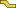

|
| Menu location |
|---|
| Arch → Rebar tools |
| Workbenches |
| Arch |
| Default shortcut |
| None |
| See also |
| Stirrup |
| This command is part of the Reinforcement AddOn, that you can install via menu Tools → Addons Manager |
Description
The  Bent Shape Rebar tool allows user to create a bent shape reinforcing bar in the structural element.
How to use
- Create a structure element
- Select any face of the structure
- Then select Bent Shape Rebar from the rebar tools
- A task panel will pop-out on the left side of the screen as shown below

- Select the desired orientation
- Give the inputs like front cover, left cover, right cover, bottom cover, top cover, anchor length, bent angle, rounding and diameter of the rebar
- Select the mode of distribution either amount or spacing
- If spacing is selected, a user can also opt for custom spacing
- Pick selected face is used to verify or change the face for rebar distribution
- Click OK or Apply to generate the rebars
- Click Cancel to exit the task panel

{kind=link}
{kind=link}
Properties
- DATAOrientation: It decides the orientation of the rebar (like a bottom, top, right and left).
- DATAFront Cover: The distance between rebar and selected face.
- DATALeft Cover: The distance between the left end of the rebar to the left face of the structure.
- DATARight Cover: The distance between the right end of the rebar to right face of the structure.
- DATABottom Cover: The distance between rebar from the bottom face of the structure.
- DATATop Cover: The distance between rebar from the top face of the structure.
- DATAAnchor Length: It is the arm's length of bent shape rebar.
- DATABent Angle: It decides angle in bent shape rebar.
- DATAAmount: The amount of rebars.
- DATASpacing: The distance between the axes of each bar.
Scripting
The Bent Shape Rebar tool can by used in macros and from the python console by using the following function:
makeBentShapeRebar(FrontCover, BottomCover, LeftCover, RightCover, Diameter, TopCover, BentLength, BentAngle, Rounding, AmountSpacingCheck, AmountSpacingValue, Orientation, Structure, Facename)
- The Bent Shape Rebar have four different orientations:
- Bottom
- Top
- Left
- Right
- Adds a Bent Shape reinforcing bar object to the given structural object.
- If no Structure and Facename is given, it will take user selected face as input.
- Here CoverAlong argument is having type tuple.
- Returns the new Rebar object.
Example: Creating Bent Shape rebar.
import Arch, BentShapeRebar structure = Arch.makeStructure(length=1000.0, width=1000.0, height=100.0) structure.ViewObject.Transparency = 80 FreeCAD.ActiveDocument.recompute() rebar = BentShapeRebar.makeBentShapeRebar(20, 20, 20, 20, 8, 20, 100, 135, 2, True, 10, "Bottom", structure, "Face1")
Changing properties of Bent Shape rebar.
import BentShapeRebar BentShapeRebar.editBentShapeRebar(rebar, 50, 50, 50, 50, 12, 20, 100, 135, 2, True, 10, "Top")